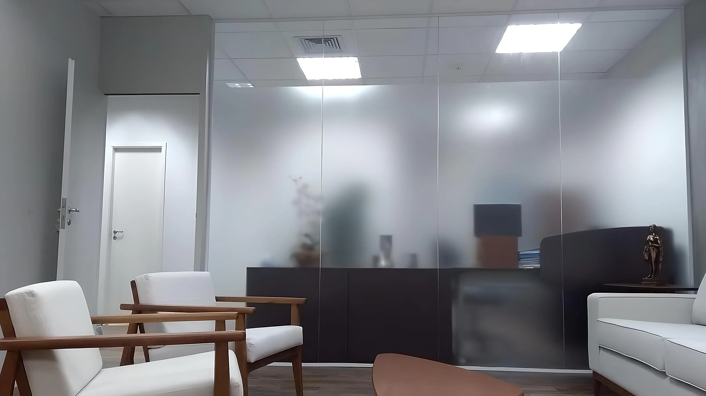

Frosted Glass Film for Offices: How to Ensure Privacy Without Losing Natural Light
In corporate projects, treating glass partitions and doors calls for a balance between privacy, light, safety and visual identity. Learn how to specify frosted films and avoid mistakes during installation.
Glass partitions are increasingly common in corporate architecture because they keep spaces visually connected and let natural light through. However, that transparency is not always right for meeting rooms, medical offices, administrative areas and spaces that call for discretion.
One of the most common questions when specifying these spaces is: how do you ensure privacy in glass rooms without making the office darker?
Frosted films can meet much of that need, as long as the project takes into account the intensity of the frosted effect, where people sit and stand, and the purpose of each room.

Does frosted film block the view completely?
It depends on the material used and the intended effect.
Standard frosted film diffuses light and makes it hard to see directly through the glass. However, it should not be mistaken for a fully opaque element.
Under certain lighting conditions and at close range, silhouettes and movement may still be visible.
For meeting rooms that require visual confidentiality, the specifier should consider full coverage, the level of opacity and whether materials need to be combined.
What is the best height for a frosted band?
There is no single height that suits every space.
The band's position should take into account seated and standing users, furniture, circulation and the visibility needed to notice glass surfaces.
In high-traffic areas, the project should also meet the applicable safety and accessibility signage requirements.
A decorative band that looks right in a boardroom may not meet the needs of a corporate corridor or a hospital reception.
Can the company logo be applied to the frosted film?
Yes. It can be customized with cut-outs, graphics, geometric patterns and elements of the visual identity.
You can work with continuous bands, partial compositions or full coverage of large surfaces, creating spaces that match the architectural design.
In offices with several departments, the design can also help identify each area and organize the space visually.

What should the technical specification include?
Before requesting a quote, architects, engineers and construction managers should provide:
- dimensions and number of glass surfaces;
- type and condition of the glass;
- need for partial or full privacy;
- position of bands and graphic elements;
- visual pattern and finish reference;
- site access and working conditions;
- safety, maintenance and cleaning requirements.
This information helps avoid mismatches between the approved design and the installed result.
How to avoid installation defects
Material quality matters, but it does not replace proper installation.
Contaminated surfaces, wrong measurements, poor alignment and finishing flaws can cause bubbles, misalignment and visual irregularities.
In projects with many rooms and floors, it is a good idea to approve a sample or pilot section before full installation.
Visual communication built into the corporate project
Treating the glass does not have to be a stand-alone job.
It can be part of a project that brings together room signage, department identification, acrylic logos, wall graphics and other corporate visual communication elements.
Momentvm Opvs, in São Paulo, develops custom vinyl, window film and visual communication solutions for companies, architects and construction firms.
Specifying glass partitions for an office, clinic or corporate development? Contact Momentvm Opvs and present your project for a technical assessment.

Momentvm Opvs — Visual Communication and Decoration
30 years of professional experience.
São Paulo — SP
You imagine it, we make it real.